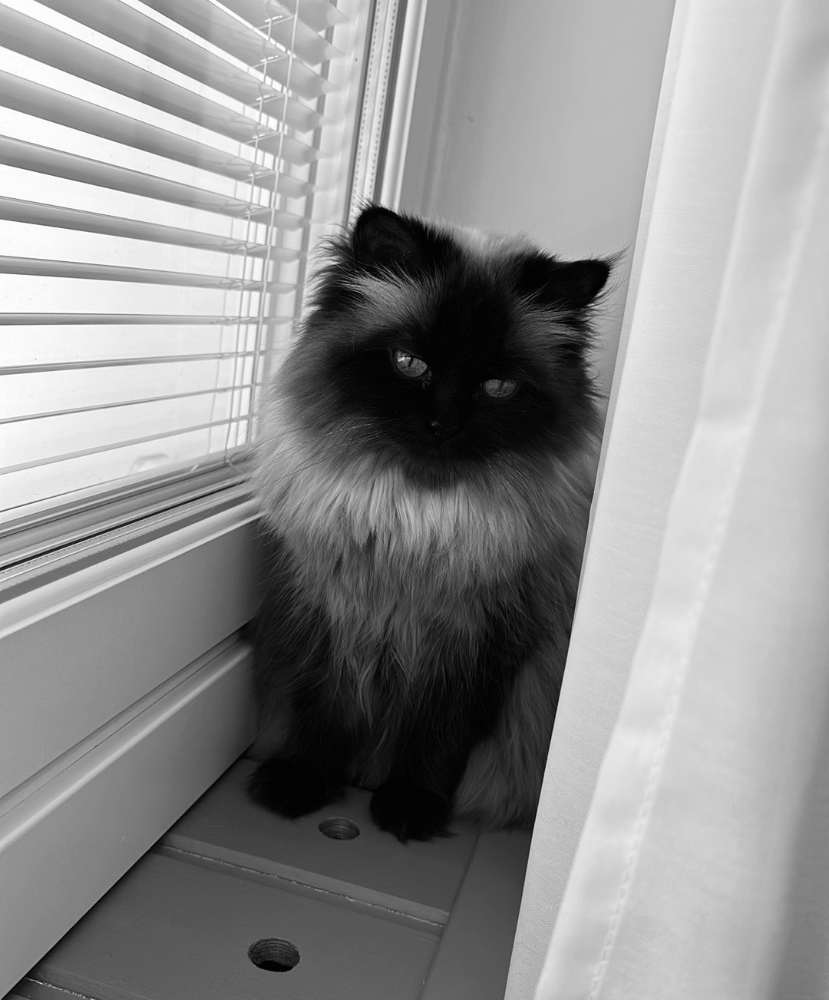
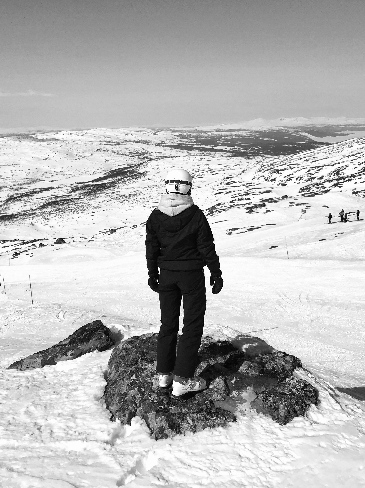

Om mig
Hej! Jag heter Agnes Perälä jag kommer från en liten by utanför Timrå. Nu bor jag i en lägenhet i Timrå med min sambo och våran lilla katt. ag är 23 år gammal och utbildar mig just nu till systemutvecklare med AI kompetens.På fritiden gillar jag att träna och vara med vänner. Jag gillar även att pussla och virka. På vintern åker jag gärna slalom och på sommaren gillar jag att resa.

Jag valde att börja plugga till systemutvecklare för att jag främst ville testa på något nytt. Jag har alltid jobbat fysiskt med kroppen och ände att de var dax för något helt annat. Jag fick även mycket insperation av min sambo som jobbar med programmering.
varför systemutvecklare?
